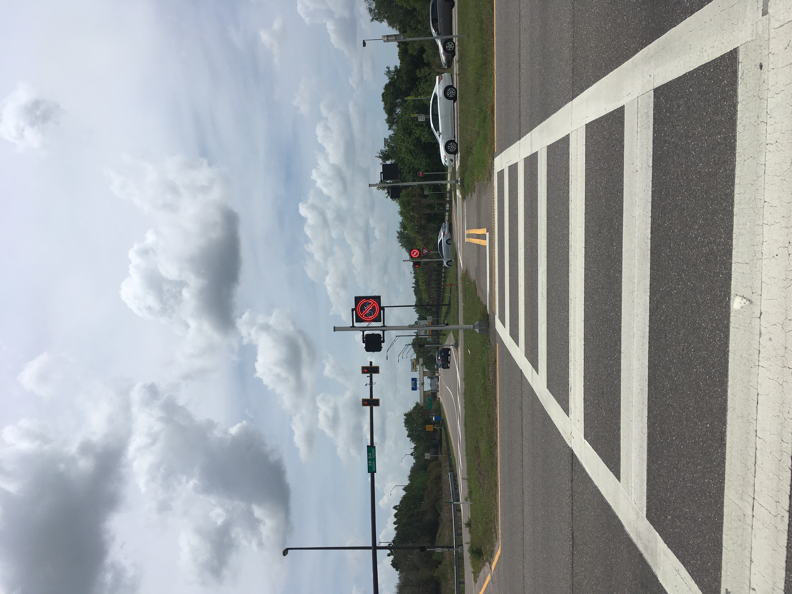
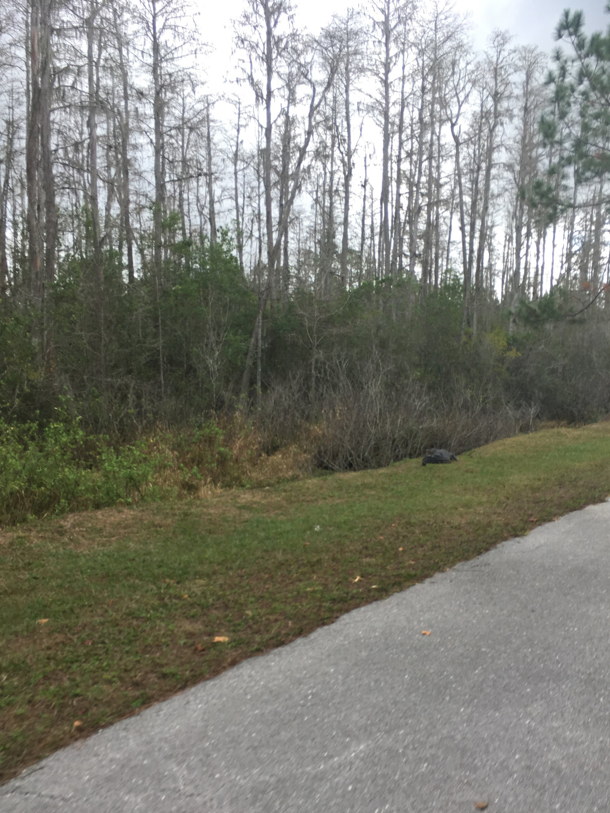
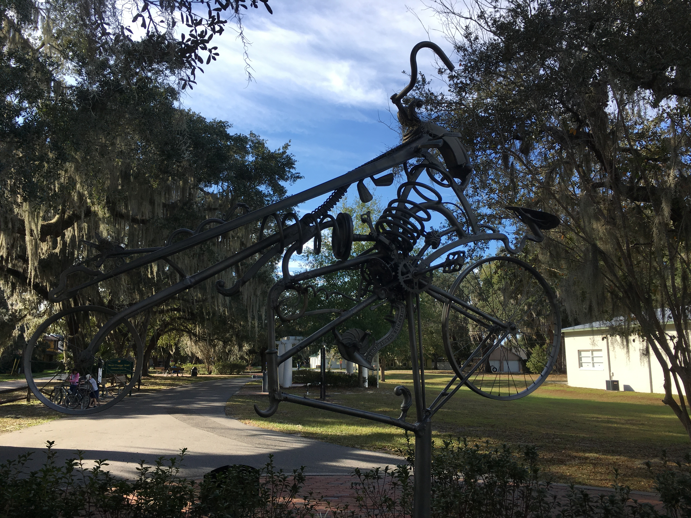

Pinellas Trail
The Pinellas Trail is (mostly) awesome. It's about 50 miles long, goes from St. Petersburg to Tarpon Springs and has a wide variety of scenery. Here is a rundown of some of the sections of the Pinellas Trail:
Downtowns
. You will see the downtowns of Dunedin, Clearwater, Tarpon Springs, and St. Petersburg along with their associated cool restaurants, bike shops, and antique shops (among other things). Shady residential areas.
"Shady" meaning "lots of trees to block that brutal Florida sun." Pretty, quiet, pleasant.Really shady neighborhoods.
Some neighborhoods are nicer than others.Bumpkinville.
The Pinellas Trail now has a section going through completely undeveloped territory! See deer, cows, and horses, oh my! One thing to note is there are a lot of crossings, some of which are super dangerous. Pinellas drivers are no more foolish than anyone else, there's just so many of them! All in all though, the Pinellas Trail is a beautiful, interesting trail with lots to see and lots to do.
Suncoast Trail

The Suncoast Trail goes from Hernando through Pasco and Hillsborough County and is great for cycling long distances without too many crossings. There's also a little bit of Florida's version of serious climbing near the north end. Also, there is the Starkey Wilderness Trail that connects to this near SR 54, which is serene and natural.
There are some very pretty areas with trees and nature and animals. However, the scenery can get samey, especially in the Pasco section. Also, you are right next to the Suncoast Parkway so there is tons of traffic noise and this also cuts down on scenery potential. But hey, no tolls unlike those silly cagers.
General James A. Van Fleet Trail

The Van Fleet trail goes roughly 30 miles from Bummieville, Polk County to Bumpty, Lake County. This trail is simply gorgeous, darling! This trail offers no challenge as far as climbing or curves because the goal is to embrace your inner tree hugger with every mile spent. There is lots of nature scenery and not a lot of cars. However, if the thought of biking/walking by gators hanging out like 5 feet from the trail terrifies you, steer clear of this one (which isn't hard to do because nobody lives here).
West Orange Trail

Let me tell you WOT is going on with this trail here. This is a 26 mile trail that will feel very familiar to anyone who's used the Pinellas Trail (even down to the naming convention!). There are downtown sections, and tree-y sections just like the Pinellas Trail. That being said, the crossings are a little easier to deal with here, and there's less sketchy areas, which is only because this thing doesn't really go through Orlando proper (in which case you'd have an 82.4% likelihood of getting hit by a car).